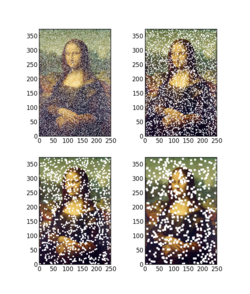
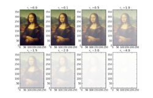

Radiative Transport
Contents
Radiative Transport¶
Radiative Transfer Equation¶
Absorption¶
Say some radiation \(I_\nu\) passes through a region \(ds\) of absorption/scattering on its way to us. Then:
where \(\alpha_\nu\) is the extinction coefficient (units of \(cm^{-1}\)). We may compute \(\alpha_nu\) a couple different ways:
where:
\(n\) is the number density
\(\sigma_\nu\) os the cross section
\(\rho\) is the mass desnity
\(\kappa_\nu\) is the opacity
Solving for intensity, we find:
where \(\tau_\nu\) is the optical depth at \(\nu\). Optical depth is often computed as:
where \(N\) is the column density of absorbers. Similarly, we have:
where \(\Sigma\) is the mass surface density and \(\kappa_\nu\) is the density-weighted extinction coefficient.
Note that when \(\tau \gg 1\), we say it is optically thick, and when \(\tau \ll 1\), we say we are optically thin.
The mean free path is given by:
Thus, we have:
That is, the optical depth is the number of mean-free-paths deep a medium is. For Poisson processes, the probability of absorption is given by:
And therefore:
Emission¶
If \(j_{\nu }\) is the emissivity, then the contribution of the emissivity of a medium to the flux is:
Emission and Extinction Together¶
It is often convenient to express this in terms of optical depth. Dividing by \(\alpha_\nu\) and recognizing \(d\tau_\nu = \alpha_\nu \, ds\):
where \({\displaystyle S_{\nu }}\) is a “source function”. In general,
There is a formal solution for \(I_\nu\). Let’s define \(\hat{I} \equiv Ie^{-\tau_\nu}\) and \(\hat{S} \equiv S e^{-\tau_\nu}\). Then:
If \(S_\nu\) is constant with \(\tau_\nu\), then:
That second term on the righthand side can be approximated as \({\displaystyle S_{\nu }\tau _{\nu }}\) for \({\displaystyle \tau _{\nu }\ll 1}\), since self-absorption is negligible. Similarly, for \({\displaystyle \tau _{\nu }\gg 1}\), it may be approximated as \({\displaystyle S_{\nu }}\). The source function \({\displaystyle S_{\nu }}\) is everything. It has both the absorption and emission coefficients embedded in it.
Optical Depth¶
Examples from Astrobaki:

An example of the Mona Lisa at optical depth of \({\displaystyle \tau =0.1}\), for obscuring particles of various radii. To achieve the same optical depth, particles with a smaller cross-sectional area need to have a higher column density.

The Mona Lisa at various optical depths, illustrating how the transition from optically thin to optically thick erases the background picture.
A useful real world example of optical depth is fog. Within a fog cloud, nearby objects are clearly visible and distant objects are completely obscured. At intermediate distances, objects are difficult but not impossible to discern. In this image, the tree to the left corresponds to an optical depth of approximately 1, since it is mostly obscured, though still visible. The person in the foreground is at an optical depth of less than 1 (perhaps around 0.5), since they are easily discernable and there is very little fog blocking light between the person and the observer. Lastly, the end of the road is at an optical depth much greater than 1, since it is completely covered over by the fog and invisible to the observer.
Takeaways¶
Equation of Radiative Transfer $\( {\displaystyle {{dI_{\nu } \over ds}=j_{\nu }-\alpha _{\nu }I_{\nu }}\,\!} \)$
EoRT in terms of Optical Depth: $\( {\displaystyle {\begin{aligned}{dI_{\nu } \over d\tau _{\nu }}&={j_{\nu } \over \alpha _{\nu }}-I_{\nu }\\&=S_{\nu }-I_{\nu }\\\end{aligned}}\,\!} \)$
\(\alpha_\nu \equiv n \sigma_\nu \equiv \rho \kappa_\nu\) is the extinction coefficient with units of inverse length squared.
\(j_\nu\) is the emissivity and has units of specific intensity divided by length.
\(S_\nu \equiv \frac{j_\nu}{\alpha_\nu}\) is the source function.